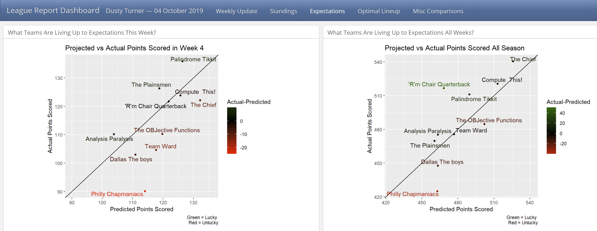

One of my superpowers is being a bad fantasy football manager. My motivation for this analysis is to show how I’m not actually that bad - but rather unlucky. To show this, I created this post.
Below I summarize how I got the data, the information I can glean from the data, share the link to this analysis for my league, and share the code so you can do it to.
There’s not any code in this post. The code I used to create the dashboard of analysis (pictured below) is on this github repo dusty-turner/ESPN-V3.
Admittedly, the repo (and code) are quite messy. I hope to clean it up over the coming weeks.

At the above link, you’ll fine a dashboard that will show analysis from my league. It includes the following:
Identify the top and bottom teams every week. In my league we give a mug to the top points scorer and a plunger for the bottom dweller.
Show a graphic to see who is over performing (or under performing) according to their record.
Analyse whose players are over/under performing according to ESPN’s projections. Another way to look at this is examining how accurate ESPN’s projections are. Along with this - If every team played their optimal lineup, what would their record be.
Lastly, I created a couple of miscellaneous observations. I created a histogram of how accurate ESPN’s predictions are by position. Also, I created a radar chart to show how each team ranks in scoring at each position compared to the other teams.
I plan to add more as the season progresses (and I have time).
R’m Chair Quarterback | Analysis Paralysis | Compute This! | Dallas The Boys | Palindrome Tikkit | Philly Chapmaniacs | Team Ward | The OBJective Functions | The Chief | The Plainsmen
For each team, I created a markdown report analyzing their performance. Here is the analysis I currently have for each team:
Short league summary depicting if the selected team earned the top (or bottom) points scorer award.
A visualization showing how well each player performed according to their expectation. Also a sortable table of this graphic.
A listing of the optimal lineup and how badly the manager missed this lineup.
A radar chart showing how well each position performed compared to all previous weeks.
As a recap from previous posts:
If your league is public, follow this post.
If your league is public, you can use python code in R or more simply, do it directly in R.
Please provide any feedback you may have. How could I make this better? What else could I analyze?